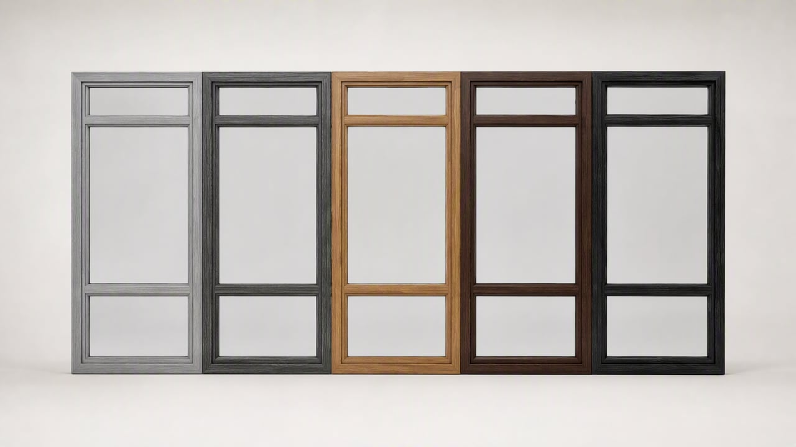

Ламинация под дерево
Каким может быть профиль остекления
Пять оттенков ламинации со структурой дерева — от светлого серого до чёрного. Подбираем цвет под отделку балкона и фасад дома и привозим физические образцы на замер.

-
Серый
«Серый ясень»
Спокойный светлый тон с мягким рисунком волокон. Не спорит ни с белой, ни с серой отделкой.
Подойдёт: светлые стены, минимализм, солнечная сторона.
-
Тёмно-серый
«Графит под дерево»
Строгий современный оттенок: читается как дерево, но остаётся графитовым, хорошо держит контраст.
Подойдёт: серый ламинат на стенах и полу, светлый фасад.
-
Светло-коричневый
«Золотой дуб»
Тёплый медовый тон, самая привычная имитация дерева. Даёт ощущение уюта в любую погоду.
Подойдёт: деревянная отделка и мебель из дерева, классика.
-
Тёмно-коричневый
«Орех»
Насыщенный глубокий тон с выраженной текстурой волокон. Самый «дорогой» вид из коричневых.
Подойдёт: тёмная мебель, классический интерьер, тёплый вечерний свет.
-
Чёрный
«Чёрное дерево»
Максимальный контраст: рама почти растворяется на фоне стекла и ночного города.
Подойдёт: премиальный вид, стены светлых тонов.

Профиль под дерево — это ПВХ или алюминий с плёночной ламинацией, а не массив: на фото видно, что снаружи декор, а внутри обычные камеры профиля. Оттенок зависит от производителя плёнки, поэтому один и тот же «орех» у разных поставщиков выглядит по-разному — подбираем по физическому образцу. Тёмные и чёрный декора на солнечной стороне нагреваются сильнее и выгорают быстрее светлых. Цветные окна изготавливаются дольше белых: 3–4 недели против 5–10 дней. Гарантия на окна — 5 лет, на работы — 1 год, по договору.